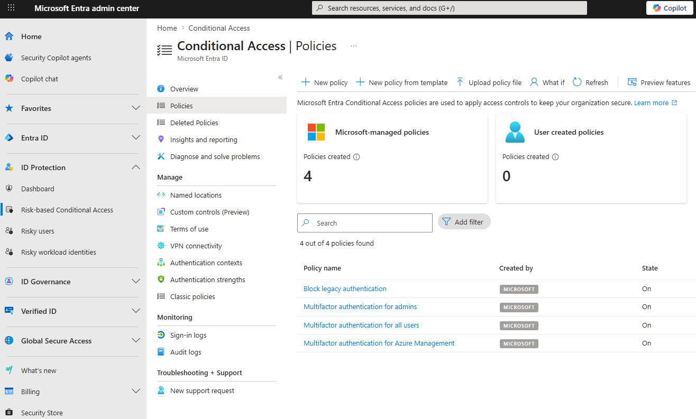

Tutorial – Microsoft 365 Security
This check verifies that Conditional Access policies are configured and enabled.
Missing Conditional Access policies can expose the tenant to:
Open the Microsoft Entra Admin Center and navigate to:
Microsoft Entra → ID Protection → Risk-based Conditional Access → Policies
https://entra.microsoft.com/#view/Microsoft_AAD_ConditionalAccess/ConditionalAccessBlade/~/Policies
Verify that:
Important recommended policies:

Conditional Access is considered a critical Microsoft 365 security protection.